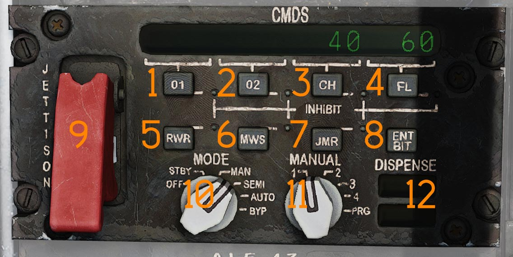
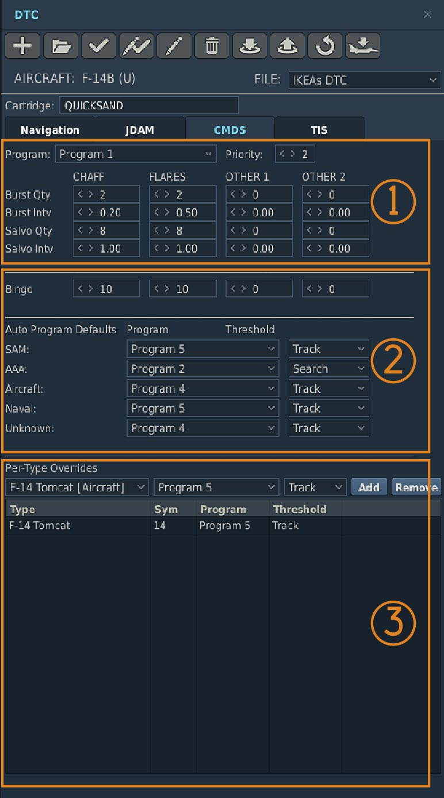

AN/ALE-47 Countermeasures Dispensing Set
The F-14B Upgrade is equipped with the AN/ALE-47 Countermeasure Dispensing Set. The ALE-47 uses the legacy launchers from the AN/ALE-29 and integrates the LAU-138 Chaff and Flare Dispenser.
The launchers each have two sections, one containing 10 cartridges and the other 20. They are referred to as the left and right dispensers, even though the left dispenser is actually the forward launcher and the right dispenser is the aft launcher, with both mounted in line on the left side of the tailhook.
The launchers have a total capacity of 60 cartridges. Each section can hold only one type of cartridge, meaning that any combination of cartridges is possible as long as the quantity of each type is a multiple of 10. The ALE-47 recognizes loaded cartridges, so when reloading cartridges the panel automatically presents totalized countermeasure values.
The system provides eight programs that can be defined in the Mission Editor CMDS section of the DTC. The pilot only has control of Program 8 via the DLC switch on the control stick. Programs 5, 6, and 7 are actuated using the RIO's countermeasure switches located above the DDD. Programs 1 through 4 can be used as automatic, semi-automatic, or manual programs. Depending on the selected operating mode, these programs are dispensed using the inboard RIO countermeasure switch located above the DDD.
Digital Control Display Unit (DCDU)
The DCDU is located on the RIO right side console. It serves as the primary operator interface with the CMDS. The DCDU allows the operator to jettison remaining expendables, see system information as displayed by the 16 character display, inhibit the dispensing of specified countermeasures, initiate BIT, select mode of operation, and select one of four pre-programmed dispense programs.

INHIBIT Button Functions
The INHIBIT function is initiated by pressing one of seven expendable inhibit buttons: Other 1, Other 2, Chaff, Flares, Radar Warning Receiver (RWR), Missile Warning System (MWS), or Jammer (JMR). When depressed, the respective LED will illuminate when the countermeasure type is inhibited from dispensing.
OTHER 1 Button
The (O1) button (
OTHER 2 Button
The (O2) button (
CHAFF Button
The (CH) button (
FLARES Button
The (FL) button (
Radar Warning Receiver Button
The RWR button is (
Missile Warning System Button
The MWS button (
JAMMER Button
The JAMMER button is (
💡 Not functional.
ENTER/BUILT IN TEST Button
Actuating the ENT/BIT switch (
💡 Not functional.
Guarded JETTISON Switch
The guarded JETTISON switch (
MODE Control Switch
The Mode control switch (
OFF Position
OFF mode interrupts all power to the CMDS dispenser assemblies. This MODE of operation is overridden by JETTISON only
STANDBY Position
STBY mode allows the CMDS to power-up and initialize. The only dispensing function available while in STBY is JETTISON.
MANUAL Position
MAN mode allows the operator to select a manual program for dispensing. One of the Four programs (1-4) selected by the MANUAL switch can be initiated by actuating the designated DISPENSE switch. In manual the system will default to the program chosen on the manual switch and the actuation of the inboard switch on the countermeasure dispense switches only dispenses that chosen program. Programs 5, 6 and 7 may also be dispensed by actuating the RIO countermeasure dispense switches above the DDD. Countermeasures will be dispensed in accordance with parameters as defined by the MDL.
SEMI-AUTOMATIC Position
SEMI mode allows the operator to select a manual dispensing program. One of four preset programs, selected with the MANUAL switch, can be initiated by actuating the designated DISPENSE switch. When the system detects a threat programmed via the MDL, it selects the appropriate dispensing program. However, the selected program will only be dispensed once the RIO depresses the inboard countermeasure switch. As long as enough countermeasures remain, the operator requested program can be dispensed at the same time as the semi-automatic program. All programs are available for semi-automatic dispensing, provided they are pre-set via the DTM.
AUTOMATIC Position
AUTO mode allows the system to respond automatically to detected threats. When the system detects a threat programmed via the MDL, it automatically selects and dispenses the appropriate countermeasure program without requiring RIO input. All programs are available for automatic dispensing, provided they are pre-set via the DTM.
The inboard countermeasure switch is disabled as long as no program has been selected by the system. Programs 5, 6, 7, and 8 continue to function normally.
BYPASS Position
BYP allows selection of bypass mode for jettison only. To select the BYP position press knob down at AUTO position and turn.
MANUAL Switch
The Manual switch (
Positions 1 through 4
Switch positions 1 through 4 are used to select one of four pre-programmed dispense programs. The selected dispense program is initiated by a command from the designated dispense switch in MAN, SEMI, and AUTO modes.
PROGRAM Position
If PRG is selected the ALE-47 system will default to manual program 4 for dispense.
READY/NO GO Display
The Ready display (
The NO GO annunciator illuminates when the CMDS is NOT ready to dispense because of a system failure, during initial power-up, and in BYP Mode.
Controls and Operation
💡 In DCS the F-14 countermeasure loadout is set in the Mission Editor, see DCS Mission Editor Functions Specific to the HB DCS F-14 or controlled through the radio menu under ground crew. The default setting in the mission editor is bypassed. To see the real loadout check the kneeboard.
Programmer
The Programmer is part of the Programmer Panel Assembly and is the central processing, controlling and communications unit of the CMDS.
Countermeasure preset priority
Priorities can be assigned to any program. When a higher priority program is running, initiating a lower priority program will not have any effect, where initiating a higher priority program will override the previously running program.
Bingo
A Countermeasure Bingo can be defined in the Mission editor and programmed into the MDL. When that Bingo state is reached the ALE-47 panel with show "LoXX", where XX indicates the number of countermeasures of any type remaining as per the DTM setting.
🔴 WARNING: All countermeasure cartridge ejection is inhibited while the weight on wheels sensor is active, preventing countermeasure ejection while on the ground.

(
(
(
RIO Hand Hold Switches

Two countermeasure switch hats (
The switches are functionally mirrored.
- Up - Initiates CMS program 6.
- Down - Initiates CMS program 5.
- Inboard - Initiates CMS program 1-4, depending on which semi-automatic program is selected or which program is selected on the DCDU.
- Outboard - Initiates CMS program 7.
Countermeasure dispenser setup
The F-14 both has the native countermeasure buckets mounted on the main airframe, as detailed above they can be filled with chaff or flares in sets of 10. So for example 30 chaff and 30 flare can be mounted in the buckets.
The F-14B(U) tomcat is also equipped with the LAU-138 rails, these rails in reality held BOL Chaff and BOL Flares. Due to the limited DCS simulation only Chaff is available for dispensing from the LAU-138.
Each rail is filled with 40 chaff packets, the rails always dispense together, providing 40 chaff releases.